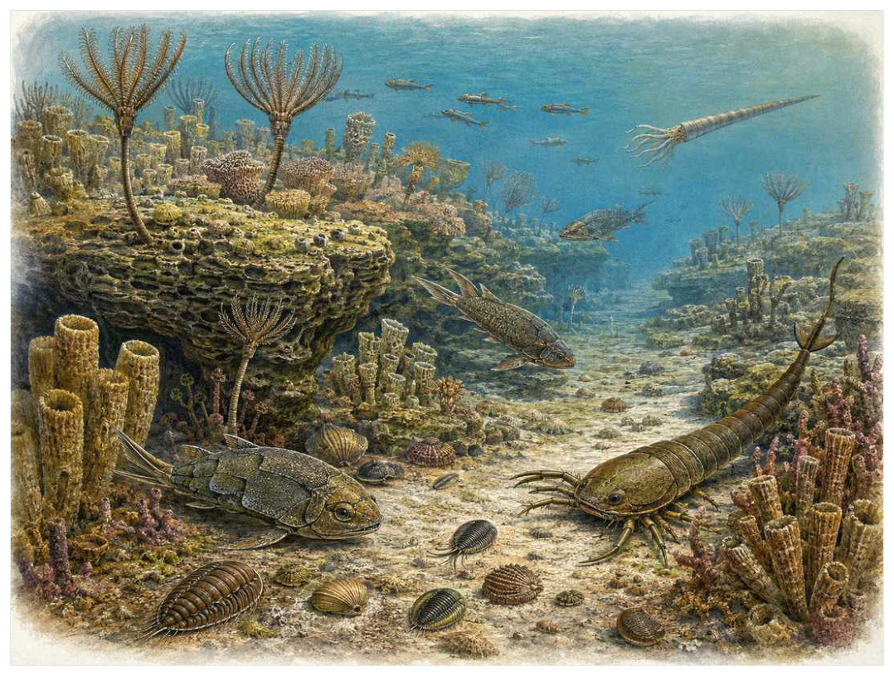
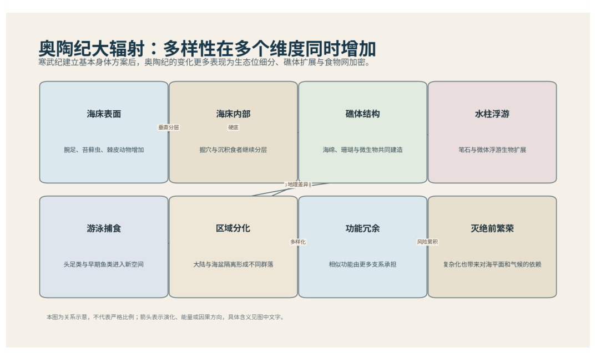

第06篇 · 志留纪：生命开始进入陆地 · 第 16 章
志留纪海洋复苏：有颌鱼与礁体回归
本篇主题:志留纪：生命开始进入陆地
海洋从灭绝中恢复，植物与节肢动物在裸露大陆上建立立足点。

本章科学复原配图 （用于呈现结构与生态关系, 不替代化石照片、测量数据与系统发育证据。）
这一章进入约4.44亿至4.19亿年前。没有任何生物预知下一时代，所有性状都只能在当时的资源、天敌和繁殖条件下接受筛选。志留纪常被夹在奥陶纪和泥盆纪之间快速略过，但它见证了珊瑚-层孔海绵礁扩张、板足鲎繁荣和有颌鱼早期辐射。海平面总体较高，浅海重新连成广阔生态带。捕食者的口部结构和游泳能力逐渐改变食物网。
进入这个时代
生态系统的真实声音不是巨兽咆哮，而是持续的摄食、分解、搬运和繁殖。每一具尸体、每一层落叶和每一次沉积扰动都会重新分配资源。暖浅海中，礁体由珊瑚和层孔海绵构建。小型有颌鱼在礁间穿梭，无颌鱼仍然多样；大型板足鲎沿海底巡行。海岸之外的陆地仍低矮、潮湿且缺乏深厚土壤。
在“志留纪海洋复苏：有颌鱼与礁体回归”所覆盖的时间里，不能把地理与气候当作固定背景。海陆位置、海平面、河流或植被结构会改变资源可达性，同一性状在不同地区可能得到完全相反的选择结果。
以志留纪海洋复苏：有颌鱼与礁体回归为例，亲缘与外形不能混为一谈。相似身体可能来自共同祖先，也可能来自趋同；过渡类型也不是两类动物的机械拼接，而是当时能够正常摄食、运动和繁殖的完整生物。 在本章中，这一约束具体落在“礁体恢复提供躲藏、附着和育幼空间”这条关系上。
再从约4.44亿至4.19亿年前的时间尺度看，演化的单位是种群而不是单个英雄。个体结构影响生存，但地理分布、繁殖速度、幼体死亡率和种群规模决定变异能否保留下来。化石中最醒目的成年骨架，未必是决定支系命运的阶段。 它与“颌的早期多样化”共同决定了后续变化可以沿哪些路径发生。

图 16-1 奥陶纪大辐射使水柱、礁体和底栖生态同时加密。
生态系统如何运转
理解“礁体恢复提供躲藏、附着和育幼空间”需要区分个体事件与长期压力。偶然一次捕食只改变个体命运，持续数千代的稳定关系才可能推动牙齿、外壳、感觉器官或生活史发生方向性变化。
围绕“礁体恢复提供躲藏、附着和育幼空间”，这种关系没有永恒赢家。收益随密度和环境改变：防御越常见，攻击专门化的价值越高；资源越稀少，维持昂贵结构的代价越大。化石记录中的扩张与衰退，常是这种动态平衡被外部事件打破的结果。对志留纪海洋复苏：有颌鱼与礁体回归而言，这一后果还会与“颌让摄食动作从单纯吸入扩展到咬切和抓握”相互放大或抵消。
“颌让摄食动作从单纯吸入扩展到咬切和抓握”还会改变可利用空间。一个支系若能进入新的水深、植被高度或沉积层，竞争会暂时减弱；随后追随者、捕食者和寄生者又会把新空间变成新的互动网络。
围绕“颌让摄食动作从单纯吸入扩展到咬切和抓握”，它的长期后果通常通过幼体和繁殖体现。成年个体即使能抵抗一次危机，只要巢址、配子、幼体食物或成长季节被破坏，种群仍会在数代内下降。 对志留纪海洋复苏：有颌鱼与礁体回归而言，这一后果还会与“有鳍游泳者与底栖无颌鱼在生态位上分化”相互放大或抵消。
把“有鳍游泳者与底栖无颌鱼在生态位上分化”放进食物网，可以看到它不是孤立行为。它会影响种群密度、栖息地使用和尸体进入分解链的速度，并把后果传给并未直接参与互动的物种。
围绕“有鳍游泳者与底栖无颌鱼在生态位上分化”，还要考虑空间异质性。一项在浅海、河谷或林冠有效的策略，移到深水、干旱内陆或开阔地便可能失去优势。因此同一支系常出现区域性扩张，而不是全球同步取代。 对志留纪海洋复苏：有颌鱼与礁体回归而言，这一后果还会与“礁体恢复提供躲藏、附着和育幼空间”相互放大或抵消。
关键演化创新
在“志留纪海洋复苏：有颌鱼与礁体回归”中，围绕“颌的早期多样化”，这一结构的历史应按性状拆开。支撑、感觉、供能和控制往往不是同时成熟，化石会显示镶嵌状态：某一部分已接近后来的形态，其他部分仍保留祖征。 它首先需要在约4.44亿至4.19亿年前的生态条件下产生可测量收益。
就“颌的早期多样化”而言，化石能较可靠地记录硬组织形态，却很少直接保留基因调控与短时行为。因此结构出现通常可信，最初用途和选择路径则应按证据标为主流解释或合理推测。 本章把它与“成对鳍稳定控制”并列，是为了显示复杂性状往往依赖多部分协同。
在“志留纪海洋复苏：有颌鱼与礁体回归”中，围绕“成对鳍稳定控制”，“成对鳍稳定控制”是本章的重要演化创新。创新并不等于某一代突然长出完整器官，它通常由旧结构的尺寸、连接、材料和表达时序逐步变化，并在每个中间阶段承担可用功能。 它首先需要在约4.44亿至4.19亿年前的生态条件下产生可测量收益。
就“成对鳍稳定控制”而言，其宏观影响往往滞后于结构起源。一个创新可以先在小型、稀少支系中存在数百万年，直到环境变化或竞争者灭绝后才迅速扩张；“出现”和“成为主导”是两个不同事件。 本章把它与“珊瑚-海绵礁工程”并列，是为了显示复杂性状往往依赖多部分协同。
在“志留纪海洋复苏：有颌鱼与礁体回归”中，围绕“珊瑚-海绵礁工程”，这一结构的历史应按性状拆开。支撑、感觉、供能和控制往往不是同时成熟，化石会显示镶嵌状态：某一部分已接近后来的形态，其他部分仍保留祖征。它首先需要在约4.44亿至4.19亿年前的生态条件下产生可测量收益。
就“珊瑚-海绵礁工程”而言，这也提醒我们不要寻找单一关键基因。复杂性状由多个组织和调控网络协调，改变任何一环都可能产生不同结果，演化路径因此呈树状而非直线。 本章把它与“颌的早期多样化”并列，是为了显示复杂性状往往依赖多部分协同。
生命群像：把物种放回生态网络
梦幻鬼鱼（Entelognathus primordialis）
梦幻鬼鱼（Entelognathus primordialis）是晚志留世的一名真实生态成员，而不是通往后代的抽象过渡。它约有约20厘米，以浅海小型有颌鱼的方式获取资源；兼具盾皮鱼式装甲和硬骨鱼式颌面骨，改变颌骨演化认识反映了其祖先历史与局部选择压力共同留下的结果。
对梦幻鬼鱼而言，它既可能是捕食者、植食者或工程者，也同时是其他生物的猎物、竞争者和分解资源。一次取食只是一瞬，长期生态影响来自成千上万个体反复搬运营养、改变植被或扰动沉积物。体型越大，这种工程效应通常越明显，但恢复速度也常越慢。 这使“兼具盾皮鱼式装甲和硬骨鱼式颌面骨，改变颌骨演化认识”不能脱离其浅海小型有颌鱼角色来理解。
判断它的生活方式时，研究者首先使用它不是现代硬骨鱼直接祖先，而是显示早期有颌类特征组合复杂。随后会检验替代解释：同样的牙是否也能处理其他食物，同样的骨骼比例是否由年龄造成，同一骨层是否来自群体生活还是灾难性聚集。排除过程比贴标签更重要。
由梦幻鬼鱼这个案例看，过去的复原常受完整现代动物模板影响，新材料则迫使研究者接受更陌生的身体比例或生活方式。最稳妥的表达是保留估计区间，并明确哪些软组织、颜色和社会行为仍属合理推测。 它在晚志留世留下的记录，因此同时是第16章所讨论的形态史和生态史的一部分。
初始全颌鱼（Qilinyu rostrata）
若把镜头从时代拉近到个体，初始全颌鱼（Qilinyu rostrata）会首先进入视野。它生活于晚志留世，体型约约20厘米。作为浅海有颌鱼，它依靠颌面骨和装甲帮助讨论硬骨鱼式骨板的深层起源与环境和其他生物发生关系。
对初始全颌鱼而言，成年体型往往主导复原，但幼体可能使用完全不同的食物和栖息地。若成长阶段跨越多个生态位，种群就同时依赖多套环境；其中任一环节中断都可能导致长期衰退。化石骨床的年龄结构因此比单具最大标本更能说明生态。 这使“颌面骨和装甲帮助讨论硬骨鱼式骨板的深层起源”不能脱离其浅海有颌鱼角色来理解。
关于它的直接依据是：系统位置依解剖编码，仍可能随新标本调整。研究者还必须确认骨骼是否属于同一个体、是否被水流搬运、压扁是否改变比例，以及不同大小是否只是成长阶段。只有解剖、地层和功能证据相互一致，复原才可上调为高可信。
由初始全颌鱼这个案例看，它在生命史中的价值不在于离现代形态还有多远，而在于证明这一身体组合曾真实可行。即使没有直系后代，支系也可能在当时持续繁盛，并通过捕食、植食或栖息地工程改变其他生命的选择环境。 它在晚志留世留下的记录，因此同时是第16章所讨论的形态史和生态史的一部分。
花鳞鱼（Andreolepis）
花鳞鱼（Andreolepis）存在于晚志留世。现有材料显示其大小约小型，生态位置接近早期硬骨鱼类。鳞片生长和替换显示硬骨鱼皮骨系统早期状态让它成为理解本章主题的合适案例，但不意味着同一类群所有成员都采用相同策略。
对花鳞鱼而言，这种生活方式还会反向塑造环境。摄食改变植物或猎物结构，足迹和掘穴改变沉积，尸体和排泄物把营养集中到局部。生态位不是它进入的固定房间，而是它与其他生物共同建造并持续修改的关系网络。 这使“鳞片生长和替换显示硬骨鱼皮骨系统早期状态”不能脱离其早期硬骨鱼类角色来理解。
现有认识建立在多为离散鳞片，完整身体和生态重建有限之上。古生物学的可信度不是来自一件戏剧化标本，而是来自多件标本、多个地点和不同方法得到相容结果。新发现若改变比例或分类，并非此前研究毫无价值，而是证据边界被重新画清。
由花鳞鱼这个案例看，从生态尺度看，它与本章其他成员共同维持一张网络。任何“最强”排名都会遗漏资源供应、幼体死亡、疾病和气候脉冲；真正决定长期成功的是种群能否在波动中不断完成繁殖。 它在晚志留世留下的记录，因此同时是第16章所讨论的形态史和生态史的一部分。
翼甲鱼（Pteraspis-like heterostracans）
在志留纪至泥盆纪，翼甲鱼（Pteraspis-likeheterostracans）以约数十厘米的身体参与食物网。它不是孤立的“明星生物”，而是底栖或近底无颌鱼；流线头甲和尾部显示无颌鱼并非迟钝的单一类型决定它能利用哪些资源，也决定必须承担哪些成本。
对翼甲鱼而言，相似环境可能让远亲出现相近轮廓，但内部结构会保留祖先限制。比较它与现代类比时，应只借用可检验的功能，不把现代动物的行为、社会制度或代谢水平整套复制到古生物身上。 这使“流线头甲和尾部显示无颌鱼并非迟钝的单一类型”不能脱离其底栖或近底无颌鱼角色来理解。
支持该解释的材料包括口部软组织不保存，滤食、刮食或摄食沉积物等解释并存。若不同证据出现冲突，应优先报告范围而不是强行给出单值。例如体长会随参照类群变化，运动能力会随软组织假设变化，系统位置也会随新增性状重新计算。
由翼甲鱼这个案例看，它也展示专门化的双面性：结构在稳定环境中提高效率，却可能在气候、食物或竞争格局突变时限制转向。灭绝不是对设计的道德评分，而是性状、地理范围和偶然事件相遇后的历史结果。 它在志留纪至泥盆纪留下的记录，因此同时是第16章所讨论的形态史和生态史的一部分。
翼肢鲎（Pterygotus）
认识翼肢鲎（Pterygotus）要先放弃静态骨架印象。它生活在志留纪至泥盆纪，约大型种可超过一米，日常任务是作为海洋或河口大型捕食者维持能量与繁殖。发达螯肢和流线体形代表板足鲎顶级捕食生态只是这一整套生活史中最容易化石化的部分。
对翼肢鲎而言，它既可能是捕食者、植食者或工程者，也同时是其他生物的猎物、竞争者和分解资源。一次取食只是一瞬，长期生态影响来自成千上万个体反复搬运营养、改变植被或扰动沉积物。体型越大，这种工程效应通常越明显，但恢复速度也常越慢。 这使“发达螯肢和流线体形代表板足鲎顶级捕食生态”不能脱离其海洋或河口大型捕食者角色来理解。
我们之所以能够作出上述判断，主要因为最大体型和是否高速追逐猎物常被大众夸大。单一结构通常有多种功能解释，所以还要查看磨损、病理、肌肉附着、沉积环境和近缘比较。计算模型能排除不可能姿势，却不能自动恢复没有保存的软组织。
由翼肢鲎这个案例看，面对仍有争议的细节，负责任的复原不是停止讲述，而是标注证据等级。形态、年代和亲缘可较确定，具体姿势、叫声、求偶和群猎则按材料降级；新标本会在这些边界内继续改写认识。 它在志留纪至泥盆纪留下的记录，因此同时是第16章所讨论的形态史和生态史的一部分。
因果链：环境、生态与性状
在约4.44亿至4.19亿年前，身体不是若干部件的简单相加。“颌的早期多样化”只有与“珊瑚-海绵礁工程”在供能、控制和发育上兼容，才可能稳定遗传；局部性能提高若超过呼吸、循环或支撑能力，整体反而失效。花鳞鱼的鳞片生长和替换显示硬骨鱼皮骨系统早期状态因此应放进完整身体比例中解释，而不是把某一器官单独夸大。生物力学模型可以估算受力和运动范围，组织学能限制生长速度，近缘比较能提示同源关系；三者相互校验，才有可能从静态化石走向一个能够活着完成日常活动的动物或植物。
种群层面的成功还要考虑波动，而不仅是平均状态。在资源丰富年份，“成对鳍稳定控制”带来的高性能可能迅速增加个体数；在低谷年份，维持该结构的成本又会放大死亡。若初始全颌鱼拥有较广食谱或可迁移，便可能跨过低谷；若其颌面骨和装甲帮助讨论硬骨鱼式骨板的深层起源高度依赖单一环境，恢复就更困难。化石群落中的丰度峰值、体型变化和地理收缩能为这种“繁荣—压力—恢复”循环提供线索，但必须与采样偏差区分。对约4.44亿至4.19亿年前的任何稳态描述，都只是长期波动中被岩层保存的一小段。
本章的因果链最终落在繁殖上。“颌让摄食动作从单纯吸入扩展到咬切和抓握”改变个体获得资源和避开风险的方式，“颌的早期多样化”改变身体能做什么，但只有这些差异持续影响配子、胚胎、幼体和成体留下后代的概率，演化频率才会跨世代变化。梦幻鬼鱼和初始全颌鱼的化石常让人关注尺寸或武器，然而巢、蛋、芽孢、孢粉、幼体壳和成长线往往更接近选择真正发生的位置。理解志留纪海洋复苏：有颌鱼与礁体回归，因此要把最壮观的成年结构重新接回完整生活史。
把“颌的早期多样化”拆成成本与收益，可以避免把演化创新写成无条件升级。它可能扩大摄食、运动或繁殖的边界，却要付出组织材料、发育协调和日常维持的代价；“成对鳍稳定控制”又会改变这笔账在不同生命阶段的分配。对梦幻鬼鱼而言，兼具盾皮鱼式装甲和硬骨鱼式颌面骨，改变颌骨演化认识在成年阶段或许十分醒目，但种群能否延续仍取决于幼体是否能找到食物、是否有安全的生长场所以及环境波动后是否保留繁殖者。化石往往偏爱成年硬组织，因此书写约4.44亿至4.19亿年前时必须主动补上这些不易保存却决定长期命运的环节。
从时间顺序看，“颌的早期多样化”的最早记录不等于它立即改写生态系统。结构可能先以小幅变异出现在稀少支系中，经历很长的试验期，直到“礁体恢复提供躲藏、附着和育幼空间”所代表的资源条件或竞争格局改变，才出现可见的辐射。反过来，一个支系在化石记录中突然繁盛，也不证明关键结构刚刚产生；保存窗口打开、地理扩散或生态位释放都能造成类似图景。因此讨论约4.44亿至4.19亿年前的创新时，本章把“首次出现”“功能完善”“多样化”和“成为生态主导”分成四个问题，避免用一个日期替代整段历史。
时代横截面：个体、种群与证据
证据强度也应逐句区分。三维保存鱼类头甲揭示颌和鳃弓若直接记录形态或行为痕迹，可把某些可能性排除；礁体剖面记录群落恢复若来自模型或现代类比，则通常提供范围而非唯一答案。对花鳞鱼的鳞片生长和替换显示硬骨鱼皮骨系统早期状态，我们也许能高可信地描述结构，却只能以主流解释讨论功能，以合理推测讨论日常行为。把层级写出来不会削弱故事，反而让读者知道未来新发现最可能改动哪一部分。
把结构看作模块，可以解释为什么过渡类型常显得“新旧并存”。梦幻鬼鱼的兼具盾皮鱼式装甲和硬骨鱼式颌面骨，改变颌骨演化认识可能已经接近后来状态，而呼吸、繁殖或运动的其他部分仍保留祖征；初始全颌鱼可能采用另一种组合达到相似功能。演化不要求所有部件同步改变，只要求每个阶段的完整个体能够生活和繁殖。正因如此，真实谱系会产生旁支、回退和多次独立试验，而不是教科书式直梯。
再把花鳞鱼加入横截面，群落关系会从两者比较变成网络。它作为早期硬骨鱼类，通过鳞片生长和替换显示硬骨鱼皮骨系统早期状态连接资源与其他消费者；其数量变化可能同时影响梦幻鬼鱼和初始全颌鱼，甚至改变分解链和营养循环。这样的间接效应很少能由一具骨架直接证明，却可以从物种共现、丰度、痕迹化石和环境指标中受到约束。志留纪海洋复苏：有颌鱼与礁体回归的生态复原因此需要群落数据，而不只是著名标本的精细解剖。
地理同样会拆散看似整齐的时代标签。约4.44亿至4.19亿年前并不是全球同时拥有同一种气候与群落：海盆深浅、纬度、山脉、河流和大陆隔离会让梦幻鬼鱼、初始全颌鱼与花鳞鱼的分布错开。一个支系可能在某地区衰退、在另一地区成为避难所；后来扩散又会造成化石记录中的“重新出现”。因此本章的代表物种用于说明机制，而不意味着它们都在同一地点同一时刻相遇。
“谁取代了谁”常把复杂过程压成单线叙事。在志留纪海洋复苏：有颌鱼与礁体回归中，即使初始全颌鱼在某层位后减少、花鳞鱼随后增加，也可能是二者分别响应气候或栖息地，而不是直接竞争导致淘汰。需要检查时间误差、地理重叠和资源相似度；只有三者都支持，替代关系才更可信。更多时候，生态系统通过功能重新组合过渡，旧支系与新支系会长期并存。
科学家为什么这样判断
“三维保存鱼类头甲揭示颌和鳃弓”还需要与年代学绑定。只有事件先后关系可靠，才能讨论因果；若环境变化和生物响应的误差范围大量重叠，就应表述为相关或可能机制，而不是宣布已经证明。
“礁体剖面记录群落恢复”最有价值的地方，是它能排除某些流行复原。关节不允许的姿势、承重无法支持的速度、与沉积环境冲突的生活方式，都可以被证据淘汰；剩余模型仍可能不止一个。
“牙齿、鳞片和微体化石补足完整骨架稀少的问题”提供的是一类约束而非完整录像。它可能精确记录某一瞬间，却未必代表全年或整个物种；也可能反映长期平均，却无法指出单次行为。把不同时间尺度的证据组合，才能重建生态过程。
在“志留纪海洋复苏：有颌鱼与礁体回归”这一问题上，把上述方法合在一起，研究者才能从残缺材料走向受约束的复原。任何一条证据都可能受到成岩、污染、样本量或现代类比的限制；结论越具体，越需要多条独立证据指向同一方向，并与约4.44亿至4.19亿年前的地层背景相容。
过去的图景与今天的证据
颌不是某一刻从一根鳃弓完整变成现代下颌。胚胎发育、神经嵴和多块软骨的同源关系显示它经历渐变，而早期有颌类本身已高度多样。
围绕“志留纪海洋复苏：有颌鱼与礁体回归”，旧复原并不总是彻底错误。它可能正确抓住亲缘或基本功能，却在姿势、比例和生态上被新标本修订。比较“过去认为”和“现在更支持”，能看见证据如何逐层替换想象。
对约4.44亿至4.19亿年前的材料而言，这里的争论并非一方相信科学、另一方拒绝科学，而是不同材料对模型的约束力度不同。旧结论可能建立在少量标本或错误现代类比上，新技术增加性状后会改变最合理解释。修正是研究正常运行的结果。
跨尺度观察
灭绝选择性：危机不会随机删除名单。分布狭窄、食性单一、体型大、成熟慢或依赖特定栖息地的支系往往风险更高，但每次事件的杀伤机制不同，规律只能作为概率而非绝对法则。 在“志留纪海洋复苏：有颌鱼与礁体回归”中，这一尺度具体连接了“礁体恢复提供躲藏、附着和育幼空间”与“颌的早期多样化”，因而不能只从单个成年标本判断。
恢复不是复原：大灭绝后的多样性回升并不意味着旧生态返回。幸存者会以新组合接管功能，某些空缺可能数百万年无人填补，另一些由远亲迅速占据。恢复速度应分别看物种数、身体大小和食物网复杂度。 在“志留纪海洋复苏：有颌鱼与礁体回归”中，这一尺度具体连接了“颌让摄食动作从单纯吸入扩展到咬切和抓握”与“成对鳍稳定控制”，因而不能只从单个成年标本判断。
空间镶嵌：同一地质时期包含多个大陆、纬度和海盆。地区之间可因山脉、海峡和洋流形成不同群落，局部化石库不能代表全球平均。比较多个地点能区分真正的全球事件与区域替换。 在“志留纪海洋复苏：有颌鱼与礁体回归”中，这一尺度具体连接了“有鳍游泳者与底栖无颌鱼在生态位上分化”与“珊瑚-海绵礁工程”，因而不能只从单个成年标本判断。
通向下一个时代
从本章走向下一阶段时，需要保留的不是一串物种名，而是一个因果链：环境改变可用能量与栖息地，生态关系筛选性状，性状又反过来改造环境。鱼类辐射的同时，陆地表面第一次形成可持续的小型生态系统。植物的维管组织和节肢动物的防失水结构将让大陆不再只是裸岩。
本章精选来源
- [R34] Kenrick, P. & Crane, P. R. The Origin and Early Diversification of Land Plants. Smithsonian Institution Press, 1997.
- [R35] Morris, J. L. et al. The timescale of early land plant evolution. Proceedings of the National Academy of Sciences 115, E2274-E2283 (2018).
- [R36] Edwards, D., Morris, J. L., Richardson, J. B. & Kenrick, P. Cryptospores and cryptophytes reveal hidden diversity in early land floras. New Phytologist 202, 50-78 (2014).